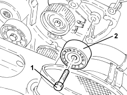

1032C30 TIMING SYSTEM FIXED TENSIONER - R.R. WITH TIMING BELT REMOVED
- Path
- Procedures > 10 ENGINE > 1032 TIMING SYSTEM > 1032C TIMING SYSTEM TENSIONERS > 1032C30 TIMING SYSTEM FIXED TENSIONER - R.R. WITH TIMING BELT REMOVED
- Kind
- repair procedure (removal / refitting; the operation number is the code)
- Applies to
- engines: 1.9 JTD 8V, 1.9 JTD 16V, 2.4 JTD 20V; all production periods
- Interactive page
- https://sloeber94.github.io/elrnDB/alfa/159/en/#/939010464
Applies to: engines: 1.9 JTD 8V, 1.9 JTD 16V; all production periods
 Removing
Removing
 Refitting
Refitting
Applies to: engines: 2.4 JTD 20V; all production periods
- On this vehicle, it is not possible to remove/refit the fixed timing belt tensioner.
To perform this operation, remove/refit the power unit
Op. 1004B10 POWER UNIT WITH MANUAL GEARBOX - R.R
and then work at the bench, customising the engine service procedures for this operation.